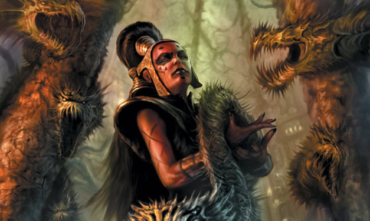
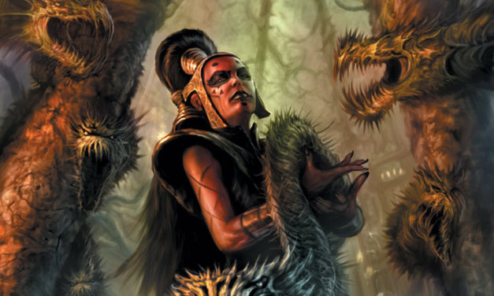

Kontakt
"Prawdziwe, zabójcze uderzenie, gdy nadejdzie, przybędzie od wewnątrz. Niezauważone i niespodziewane"
-Darth Maladi
Autor strony:
Weronika Kukwas21467@pjwstk.edu.pl

"Prawdziwe, zabójcze uderzenie, gdy nadejdzie, przybędzie od wewnątrz. Niezauważone i niespodziewane"
-Darth Maladi
Autor strony:
Weronika Kukwas21467@pjwstk.edu.pl